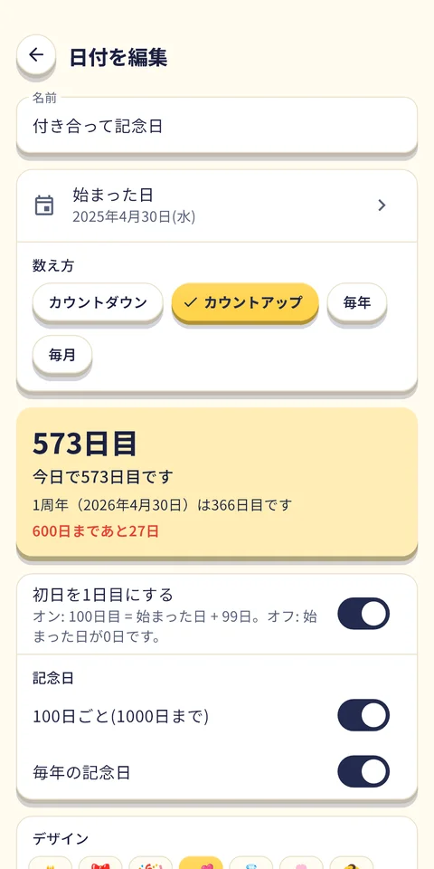
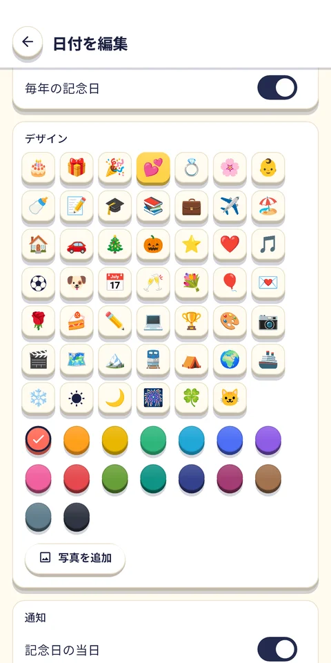
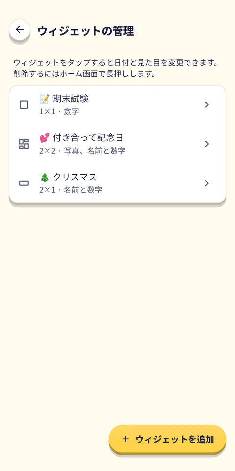

スクリーンショット







アプリについて
| アプリ名 | HowSoon |
|---|---|
| バージョン | 1.0.0 |
| 開発 | Willee Project |
| 対応プラットフォーム | Android |
大切な日まであと何日か、あの日から何日目かを数えて、ホーム画面に表示するアプリです。試験、誕生日、旅行、記念日など、待ちわびる日や覚えておきたい日に使います。
- 会員登録もログインもありません。作った日付と写真は端末の中に保存されます。
- インターネットがなくても使えます。 インターネットはアプリの下の広告と、利用統計・エラー報告の送信にだけ使います。
- ウィジェットは真夜中に自動で切り替わり、大切な日には通知を受け取れます。
- 言語は端末の設定に従います。日本語・英語・韓国語・中国語（簡体字・繁体字）に対応し、設定で直接選ぶこともできます。
- 変更するたびに、すぐ端末に保存されます（11章）。
1. はじめに
- アプリを開くと、日付の一覧が表示されます。最初は空です。
- 下の日付を追加をタップして作ります（2章）。
- 上のバーの HowSoon の名前の隣に、ウィジェットの管理ボタン（8章）と設定ボタン（10章）があります。
- 左下の削除した日付で、削除した日付を見ます（6章）。
- 一覧のカードには、日付の名前と数字（あと何日か、何日目か）が表示されます。上に固定した日付が先に並び、そのあとは次のその日が近い順です。
- カードをタップすると、その日付が開きます。大きな数字、言葉にした文、これからの記念日が表示され、上のバーに編集ボタンがあります。
2. 日付を追加する
日付を追加をタップし、「何を数えますか?」の下でテンプレートを選びます。ちょうどよい設定があらかじめ入り、作ったあとですべて変えられます。
| テンプレート | 最初の設定 |
|---|---|
| 誕生日 | 毎年。当日と前日に通知 |
| 恋人 | カウントアップ。記念日の通知をオン |
| 試験 | カウントダウン。当日・前日・1週間前に通知 |
| 旅行 | カウントダウン。当日と前日に通知 |
| 赤ちゃん | カウントアップ（赤ちゃんが生まれた日から数える用途）。記念日の通知をオン |
| カスタム | カウントダウン。通知なし |
続いて画面を埋めます。
| 項目 | 内容 |
|---|---|
| 名前 | 日付の名前です。例: 試験、旅行 |
| 日付、または始まった日 | その日です。カウントアップでは数え始める日です |
| 数え方 | カウントダウン、カウントアップ、毎年、毎月から選びます（3章） |
| 初日を1日目にする | カウントアップにだけあります（3章） |
| 記念日 | カウントアップにだけあります（4章） |
| デザイン | 絵文字、色、写真（5章） |
| 通知 | いつ知らせるかを選びます（9章） |
| 上に固定 | この日付を一覧の一番上に置きます |
- 設定の下の文が、この日付がどう数えられるかを言葉で示します。例: 「今日で100日目です」。
- 保存をタップすると反映されます。削除は日付を削除します（6章）。
- 新しいバージョンの HowSoon で作った日付には案内が出て、アプリを更新するまで変更できません。
3. 数え方
| 数え方 | 表示されるもの |
|---|---|
| カウントダウン | その日までの残り日数です。当日は今日と表示され、過ぎると何日前かが表示されます |
| カウントアップ | 始まった日から数えた日数です |
| 毎年 | 誕生日のように毎年巡ってくる、次のその日までの残り日数です |
| 毎月 | 毎月巡ってくる、次のその日までの残り日数です |
- アプリは「D-0」とは表示しません。当日は常に今日と表示します。
- ある月に存在しない日（2月29日や31日）は、その月の最後の日として数えます。
1日目から? 0日目から?
カウントアップでは、初日を1日目にするで数え方を選びます。
- オン: 始まった日が1日目です。そのため100日目は、始まった日 + 99日です。
- オフ: 始まった日が0日です。
日付を作るとき、設定の下の文が結果を言葉で示します。例: 「今日で100日目です」。恋人と赤ちゃんのテンプレートは、アプリが日本語・韓国語のときはこのスイッチがオン、ほかの言語のときはオフで始まります。選んだ値は日付ごとに保存されるので、アプリの言語を変えても数字は変わりません。
オンのときは、1周年が366日目になります。文でもそう示されます。例: 「1周年（2027-01-31）は366日目です」。1周年を365日目にしたいときは、スイッチをオフにしてください。
4. 記念日
カウントアップでは、記念日のスイッチで祝う日を選びます。
- 100日ごと(1000日まで): 100日、200日 … 1000日。
- 毎年の記念日: 毎年の周年。
日付の画面のこれからの記念日に次の記念日が並び、カードには次の記念日まであと何日かが表示されます（「100日まであと12日」）。当日にはお祝いの演出があり（10章）、通知も受け取れます（9章）。
5. デザインと固定
- 絵文字と色: 一覧から選びます。色はカード、日付の画面、ウィジェットに使われます。
- 写真: 写真を追加をタップすると Android の写真ピッカーが開きます。写真を1枚選んでください。アプリは縮小したコピー（長辺1080ピクセル以下、位置情報なし）を保存し、日付の画面と大きなウィジェットの背景に使います。写真を変更と写真を外すも同じ場所にあります。写真は合計で18MBまでです。いっぱいになったら、先に他の日付の写真を外してください。
- 上に固定: 日付を一覧の一番上に置きます。
6. 削除と復元
- 削除は編集画面にあります。削除すると「削除しました。」と元に戻すがしばらく表示されます。
- 削除した日付は30日間残ります。一覧の左下の削除した日付 (N)で開きます。
- 復元: 日付を元に戻します。
- 完全に削除: 日付を1つ、すぐに消します（先に確認の画面が出ます）。元に戻せません。
- 一番下の削除した日付を空にする: すべてをすぐに消します（先に確認の画面が出ます）。
- 30日たつと、アプリを開いたときに消えます。
- 削除した日付を表示していたウィジェットには、「削除した日付です · タップして選ぶ」と表示されます。日付を復元すると、ウィジェットにまた表示されます。
7. ウィジェットと更新
サイズは3つあり、好きなだけ置けて、ウィジェットごとに日付を別々に選べます。
| サイズ | 表示されるもの |
|---|---|
| 1×1 · 数字 | 数字 |
| 2×1 · 名前と数字 | 名前と数字 |
| 2×2 · 写真、名前と数字 | 写真、名前、数字、日付、次の記念日 |
ウィジェットは真夜中に自動で切り替わるので、朝起きたときには数字が合っています。アプリを開く必要はありません。ウィジェットをタップすると、アプリでその日付が開きます。
8. ウィジェットの追加と変更
追加する3つの方法
- ホーム画面のウィジェット一覧から: ホーム画面の空いたところを長押しし、ウィジェットから HowSoon を探して、好きなサイズをドラッグして置きます。ウィジェットに表示する日付の画面が開きます。日付を選び、デザインを決めて完了をタップします。まだ日付がないときはアプリで日付を作るをタップします。キャンセルでやめます。
- 日付の画面から: 日付の画面でホーム画面に追加をタップし、ウィジェットのサイズを選ぶと、その日付を表示するウィジェットが置かれます。ホーム画面がアプリからの追加に対応していないときは案内が出るので、上のウィジェット一覧から置いてください。
- ウィジェットの管理から: 一覧の上のバーのウィジェットの管理ボタン → ウィジェットを追加。どの日付を表示しますか？（または新しい日付を作る）を選び、サイズを選びます。
デザイン
ウィジェットに表示する日付の画面では、次も決められます。
| 項目 | 内容 |
|---|---|
| 背景 | 日付の色、ライト、ダーク、端末の設定（端末のライト・ダークのモードに従います） |
| 背景の濃さ | 背景のしっかり度合い |
| 文字サイズ | 小、中、大 |
あとから変える
- ホーム画面でウィジェットを長押しして、その設定を選びます（ボタンの名前は機種によって違います。例: 設定）。同じ画面が開きます。
- またはウィジェットの管理を開いて、ウィジェットをタップします。置いてあるウィジェットが、日付とサイズと一緒に並びます。
削除する
ウィジェットを削除するには、ホーム画面でウィジェットを長押しして削除します。アプリからウィジェットを削除することはできません。ウィジェットの管理の画面にもそう書いてあります。
9. 通知
日付の通知で、いつ知らせるかを選びます。
- 当日、前日、1週間前（カウントダウン、毎年、毎月）
- 記念日の当日（カウントアップ）
通知は通知の時刻（初期設定は午前9:00）に届きます。設定 → 一般 → 通知の時刻で変えられます。
- 通知をオンにした日付を初めて保存するとき、Android が HowSoon に通知の表示を許可するかをたずねます。許可しなかったとき、またはあとで通知がオフになったときは、アプリに「HowSoon の通知がオフになっています。」と設定を開くが表示されます。
- 通知には、日付の名前と残り日数、またはどの記念日かが表示されます。タップするとその日付が開きます。
- 通知はアプリが端末の中で作ります。通知には広告はありません。
ウィジェットや通知が遅れるとき
アプリは「正確なアラーム」の権限を使わないので、正確な時刻は Android が決めます。
- ふつう、ウィジェットや通知は予定の時刻から数分以内に届きます。
- 端末が深く眠っているときは、最大で1時間ほど遅れることがあります。画面をつけるとまもなく追いつきます。
- 端末のバッテリー節約の設定が HowSoon を制限していると、遅れることが増えます。ウィジェットの管理に「HowSoonのバッテリー使用が制限されているため、ウィジェットの更新が遅れることがあります。」と表示されます。端末のバッテリー節約の設定を確認してください。
- アプリを強制終了すると（たとえば Android のアプリの設定から）、Android は予約された更新をすべて取り消します。アプリを一度開くと、ウィジェットと通知がまた動き出します。
10. 設定とお祝い
一覧の上のバーの設定ボタンで開きます。グループは2つです。
サウンドと効果
| 項目 | 内容 |
|---|---|
| 効果音 | 音のオン・オフ |
| バイブレーション | 振動のオン・オフ |
| エフェクトを減らす | お祝いの動きをオフにします |
日付の当日や記念日にアプリを開くと、その日、その日付の小さなお祝いの演出が1回表示されます。エフェクトを減らすをオンにすると動きはなくなり、効果音がオンなら音だけが鳴ります。
一般
| 項目 | 内容 |
|---|---|
| ウィジェットの管理 | 上のバーのボタンと同じ一覧です（8章） |
| 通知の時刻 | 通知が届く時刻です。初期設定は午前9:00 |
| エクスポート | 日付と写真を1つのファイルに保存します（11章） |
| インポート | エクスポートしたファイルの日付を取り込みます（11章） |
| 以前のコピーに戻す | 自動で残したコピーに戻します（11章） |
| 言語 | 端末の言語（初期設定）に従うか、一覧から選びます（English · 日本語 · 한국어 · 简体中文 · 繁體中文） |
| プライバシー設定 | 広告の同意の画面を開き直します。同意が必要な地域（欧州など）でのみ表示されます |
| このアプリについて | バージョン、この使い方（使い方）、Google Playで評価する、プライバシーポリシー、オープンソースライセンス、ほかのアプリ（タップするとストアが開きます）、すべてのアプリを見る |
画面の色は端末のダークモードに従います。アプリの中に別のスイッチはありません。
11. エクスポート・インポート、コピー、広告
エクスポート
設定 → 一般 → エクスポートは、日付と写真を HowSoon-2026-01-31.json のような名前のファイル1つにします。共有を選ぶと選んだアプリに送り、端末に保存を選ぶとフォルダに保存します。保存すると「保存しました。」と表示されます。ファイルは開発者には送られませんが、受け取った人は日付を読み、写真を見られるので、送る前にご確認ください。
インポート
設定 → 一般 → インポート: エクスポートしたファイルを選びます。アプリが日付と写真がいくつ入っているかを表示します（「… 同じ日付は後で編集した方を残します。」）。確認すると、日付が今の日付に統合されます。新しい日付は追加され、両方にある日付は後で編集した方が残ります。18MBに収まらない写真は外して取り込み、アプリがお知らせします。新しいバージョンで作ったファイルは先に HowSoon を更新するよう案内され、HowSoon のファイルでなければ取り込めません。
以前のコピーに戻す
アプリは1日に1回、日付のコピーを残し、直近3日分を保管します。インポートと元に戻す操作の直前にもコピーを残します。
- 設定 → 一般 → 以前のコピーに戻すに一覧が出ます。
- 1つ選んで確認すると、今の日付がそのコピーに置き換わります。今の日付もコピーとして残るので、また元に戻せます。
保存とバックアップ
- 保存: 変更するたびにすぐ端末に保存します。
- バックアップ: Google バックアップ（Android の自動バックアップ）がオンなら、日付・写真・設定も一緒にバックアップされ、機種変更やアプリの再インストールのときに戻ります。不要な場合は Android の設定のバックアップのメニューでオフにできます。1日1回のコピーはバックアップに含まれません。アプリを削除すると、端末のデータも消えます。
広告
- アプリのいちばん下にバナー広告が1つあります。これが唯一の広告で、ウィジェットと通知に広告はありません。キーボードが開いているときは広告の帯は隠れます。
- 同意が必要な地域（欧州など）では、初めて開いたときに広告の同意の画面が表示され、あとから設定のプライバシー設定で変えられます。
- アプリ内課金はありません。サーバーに送るものもありません。
- 詳しくはプライバシーポリシーをご覧ください。